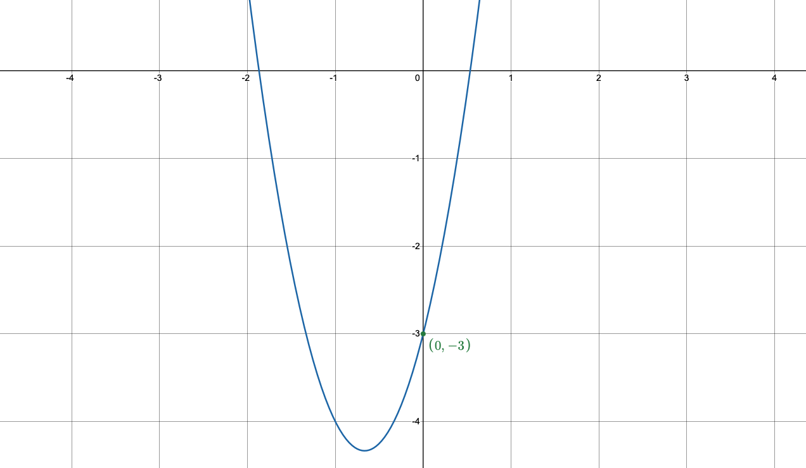
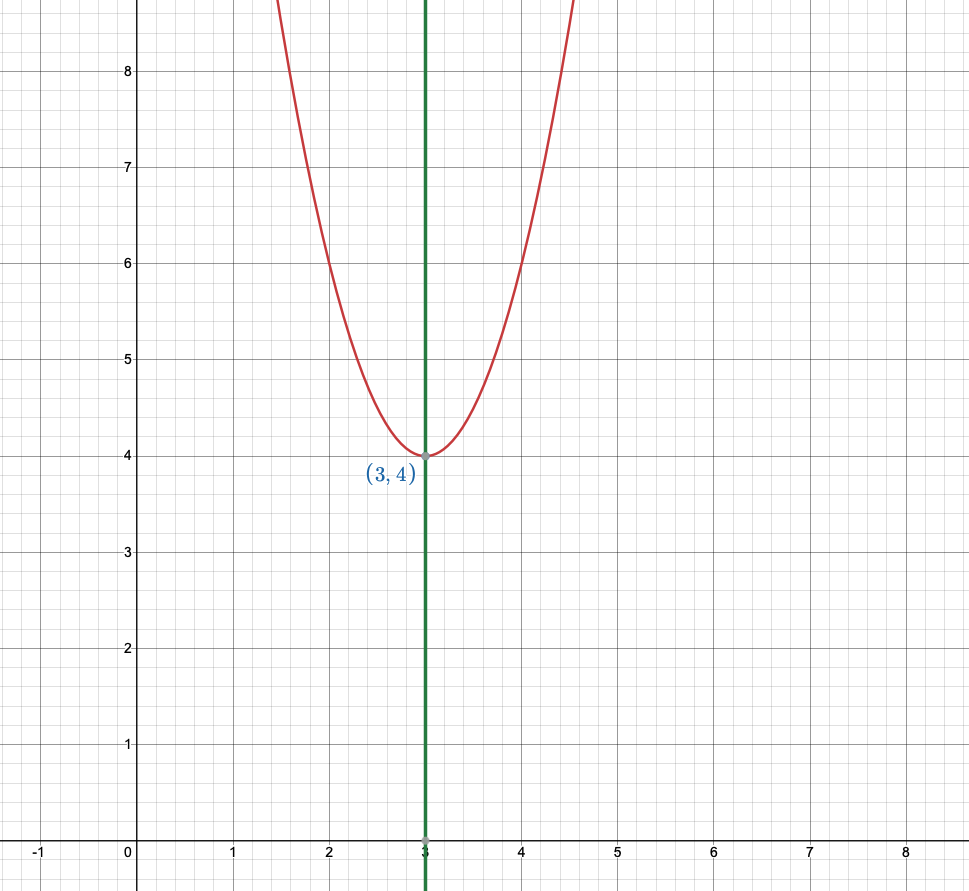
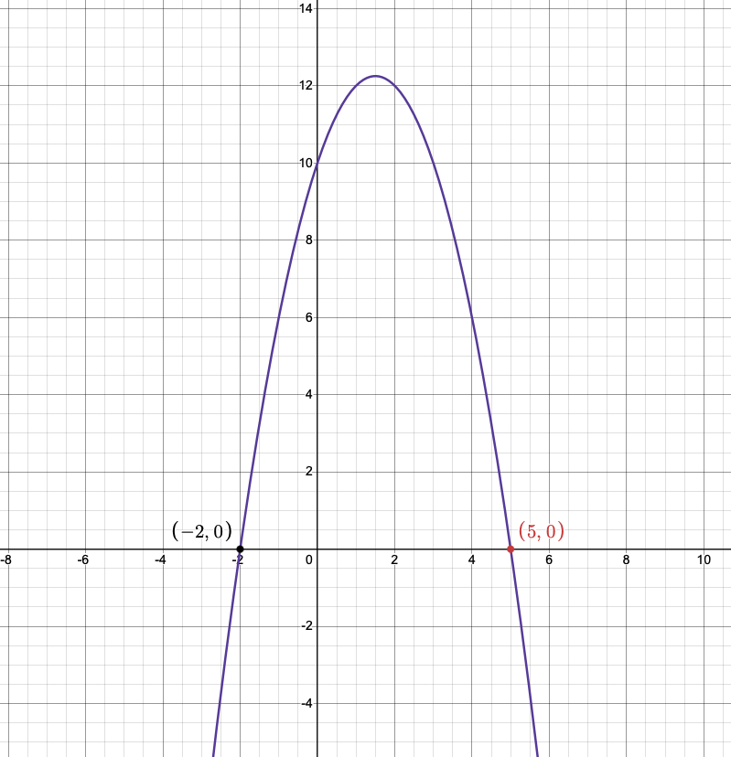
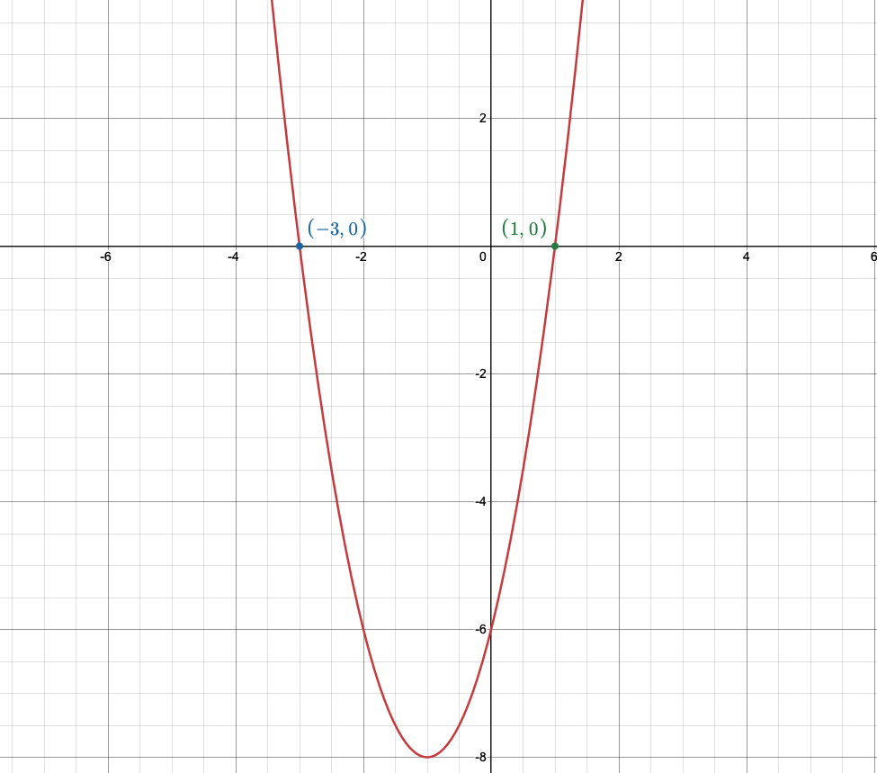

Project AD Math 20/20IB Section
What is Math 20?
Math 20 is the second mathematics course in high school and is a prerequisite for Math 30. In the case of IB students, Math 20IB is a prerequisite for Math 30 SL and HL, and also Math 25 HL.
What's in Math 20?
Note: IB topics will appear not in their own section, ergo they will appear in the middle of non-IB topics.
This is because in most cases it makes sense to learn it there.
Math 20 and 20IB goes over six (6) units; quadratic functions and equations, systems of equations and inequalities, sequences and series, radicals and absolute values, rationals and reciprocals, and reasoning and trigonomtery.
Quadratic Functions and Equations
A quadratic function always has a degree of two (2). There are three (3) forms. Another word for a quadratic function is a parabola.
Here is the vocabulary that you need to know.
- Direction of opening
- The direction of which the graph opens. If it opens up, it will look like a U and if it opens down it will look like an upside-down U.
- y-intercept
- The point at which the graph touches the y-axis, or what the y-value is when x = 0. It is expressed as the point (0 , y)
- x-intercept
- The point(s) at which the graph touches the x-axis, or what the x-value is when y= 0. There can be one, two, or none at all depending on the graph. It is expressed as the point (x, 0)
- Vertex
- The point on a quadratic where the graph deflects. If we consider the graph to look like a U then the vertex is at the very bottom point of the U. It is expressed as the point (x , y)
- Domain
- The set of all x-values for which the graph exists. For any quadratic function, the domain will always be from negative infinity to positive infinity. This means that the graph's x-value exists no matter where you go horizontally on the graph.
- Range
- The set of all y-values for which the graph exists. This is dependent on the graph's direction of opening and its vertex.
Forms of quadratics
General form
ax2 + bx + c
This form tells us the direction of opening and the y-intercept. The y-intercept in this form is the value of c. The direction of opening is determined by the value of a: if a is positive, the parabola opens upwards; if a is negative, the parabola opens downwards.
For example: y = 3x2 + 4x + 6

In this case, the graph intersects the y-axis at y = 6, or at the point (0.6) and opens upwards because a = 3 and a is positive
Standard/Vertex form
a(x - h)2 + k
This form tells us the vertex of the parabola, the direction of opening, axis of symmetry, and whether there is a max or min value. The vertex in this form is the point (h, k). The direction of opening is deteremind by the value of a just like in general form. The axis of symmetry is the vertical line defined by x = h. The max or min value is also determined by a: if a is positive, there is a minimum value at the vertex (the parabola cannot go any lower than that point); if a is negative, there is a maximum value at the vertex (the parabola cannot go any higher than that point)
For example: y = 2(x - 3)2 + 4

In this case, the vertex is at the point (3, 4), the direction of opening is upwards because a = 2 and a is positive, the axis of symmetry is the vertical line x = 3, and there is a minimum value of 4 at the vertex, meaning the graph of the parabola may not go any lower than y = 4.
A common mistake is mistaking h as -h, or vice versa. In the previous example, even though in standard form it is written 2(x - 3)2 + 4 the value of h is NOT -3 but is instead 3. Again, standard form is written as a(x - h)2 + k, so be careful with the signs.
Factored form
a(x - r)(x - s)
This form is useful for finding the x-intercepts, which are also called the "solutions" of a function or graph. The x-intercepts are where the graph crosses the x-axis, or where y = 0. The x-intercepts in this form are r and s. As well, the direction of opening is determined by the value of a just like in general and standard form. Later on, you may encounter functions with more than two (2) factors, but for now we will only focus on quadratics, because cubic functions are scary.
For example: y = -1(x + 2)(x - 5)

In this case, the graph intersects the x-axis at x = -2 and x = 5, or at the points (-2, 0) and (5, 0), and opens downwards because a = -1 and a is negative.
Solving quadratic equations
There are three possible outcomes when solving a quadratic equation. You either get two (2) distinct and real roots, one (1) distinct and real root, or no (0) real roots, or two imaginary roots.
The solutions of a quadratic equation are the x-intercepts, or the x-value when y = 0.
Solving graphically
Knowing this, we can solve the quadratic equation graphically. We do this using a graphing display calculator (GDC), or just "calculator" for short. We recommend the Ti-84 or the Ti-83. We can graph the the quadratic equation in any of the forms as long as y is isolated. What this means is that we can graph y = 3x2 + 4x + 3 but we cannot graph 3y = 12x2 + 9x + 6. Instead we would have to simplify it to get y on its own on one side of the equation. Only after that can we graph.
Again, any of the forms (general, vertex, or factored) will work.
After inputting our equation into the calculator, we can look at the graph and see where the graph of the parabola (reminder: parabola is another word for quadratic) touches the x-axis. Those points are the solution to the quadratic equation. Remember, though, that it is possible to have zero, one, or two solutions depending on the graph. We will demonstrate this further on.
For example, the graph of y = 2(x+1)2 - 8
We can see here that the graph of 2(x+1)2 - 8 intersects the x-axis at the points (-3, 0) and (1, 0), or at the points -3 and 1 on the x-axis. So, the solutions to the quadratic are at x = -3 and x = 1. (This is how you can write your final answer on a written question)
Solving algebraically
When we solve a quadratic algebraically, we have to make sure y is isolated and by itself, just like with the graphical solution.
Let's consider how to solve it just like the previous problem.
y = 2(x+1)2-8
0 = 2(x+1)2 - 8 (since we know that the solutions are on the x-intercept or when y = 0)
8 = 2(x+1)2
4 = (x+1)2
At this point, we square root 4. However, because it is a square root, we get two different solutions, +2 or -2. If we reverse the process, we will see that both (+2)2 and (-2)2 will equal to 4. This is an important concept. Because of this, we will have to consider both when getting our final answer of x.
+2 = (x+1) 1 = x
And our other solution:
-2 = (x+1)
-3 = x
Both are solutions, and if we plug either one back into the original quadratic, we will find that they work.
Testing for x = -3, y = 0:
y = 2(x+1)2 - 8
0 = 2((-3)+1)2 - 8
8 = 2(2)2
8 = 2(4)
8 = 8
And testing for x = 1, y = 0:
y = 2(x+1)2 - 8
0 = 2(1+1)2 - 8
8 = 2(2)2
8 = 2(4)
8 = 8
We see from checking that the solutions work, since one side equals the other. Also notice that these answers are the same as solving them graphically. In both cases the solutions are the same; x = -3, x = 1.
Completing the square
We use the "completing the square" method when we want to convert from general form to vertex form, because you cannot solve algebraically with general form.
Developer's notes: I mean, you can try to I guess?
We start with a quadratic equation in general form: \[ax^2 + bx + c = 0,\] where \(a\), \(b\), and \(c\) are constants and \(a \ne 0\).
The goal of completing the square is to rewrite the quadratic as a perfect square, and then add or subtract a constant outside the perfect square. This makes solving the equation or converting the quadratic to vertex form easy.
Divide the whole equation by \(a\):
\[x^2 + \frac{b}{a}x + \frac{c}{a} = 0.\]
\[x^2 + \frac{b}{a}x = -\frac{c}{a}.\]
Take half of \(\dfrac{b}{a}\), which is \(\dfrac{b}{2a}\), square it to get \(\dfrac{b^2}{4a^2}\). Add this to both sides:
\[x^2 + \frac{b}{a}x + \frac{b^2}{4a^2} = -\frac{c}{a} + \frac{b^2}{4a^2}.\]
The left side becomes a perfect square trinomial:
\[\left(x + \frac{b}{2a}\right)^2 = -\frac{c}{a} + \frac{b^2}{4a^2}.\]
Put the right-hand side over a common denominator \(4a^2\):
\[ -\frac{4ac}{4a^2} + \frac{b^2}{4a^2} = \frac{b^2 - 4ac}{4a^2}.\]
So we have:
\[\left(x + \frac{b}{2a}\right)^2 = \frac{b^2 - 4ac}{4a^2}.\]
Take square roots of both sides (remember \(\pm\)):<
\[x + \frac{b}{2a} = \pm \frac{\sqrt{b^2 - 4ac}}{2|a|}.\]<
Because \(|a|\) equals \(a\) when \(a>0\) and \(-a\) when \(a<0\), it is common to write:
\[x = -\frac{b}{2a} \pm \frac{\sqrt{b^2 - 4ac}}{2a}.\]
Combining the terms gives the quadratic formula:
\[\boxed{\;x = \dfrac{-b \pm \sqrt{b^2-4ac}}{2a}\;}.\]